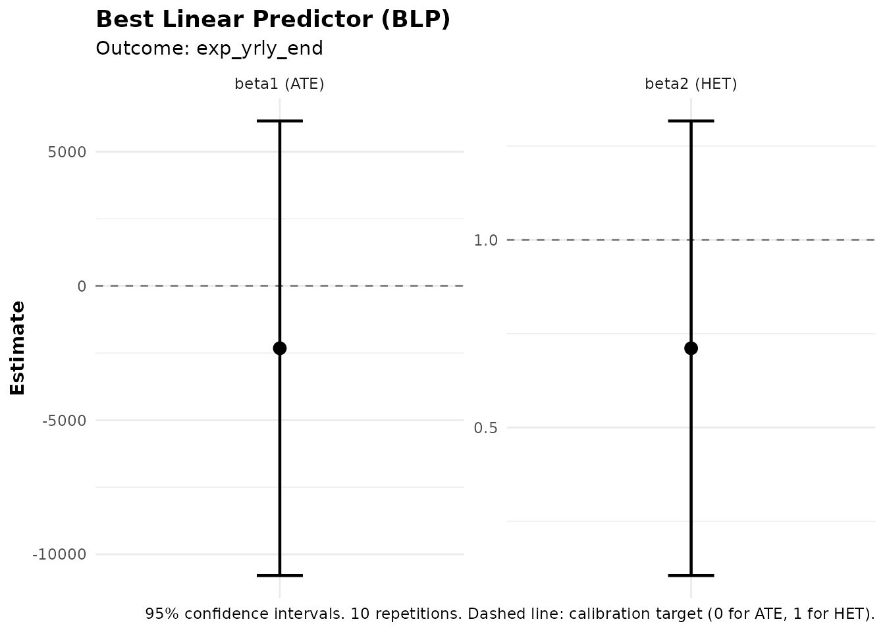
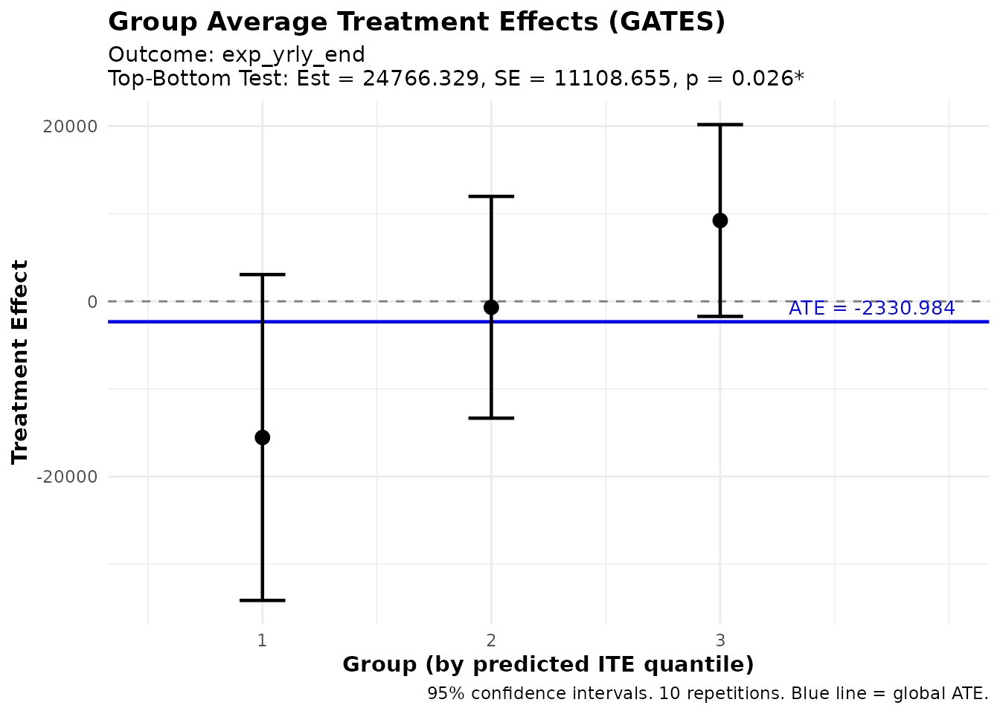
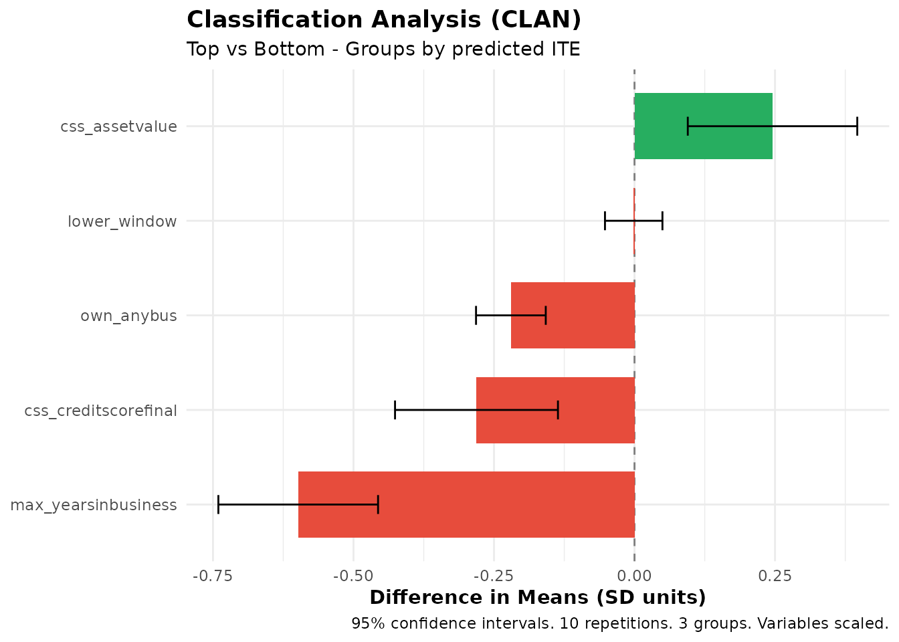
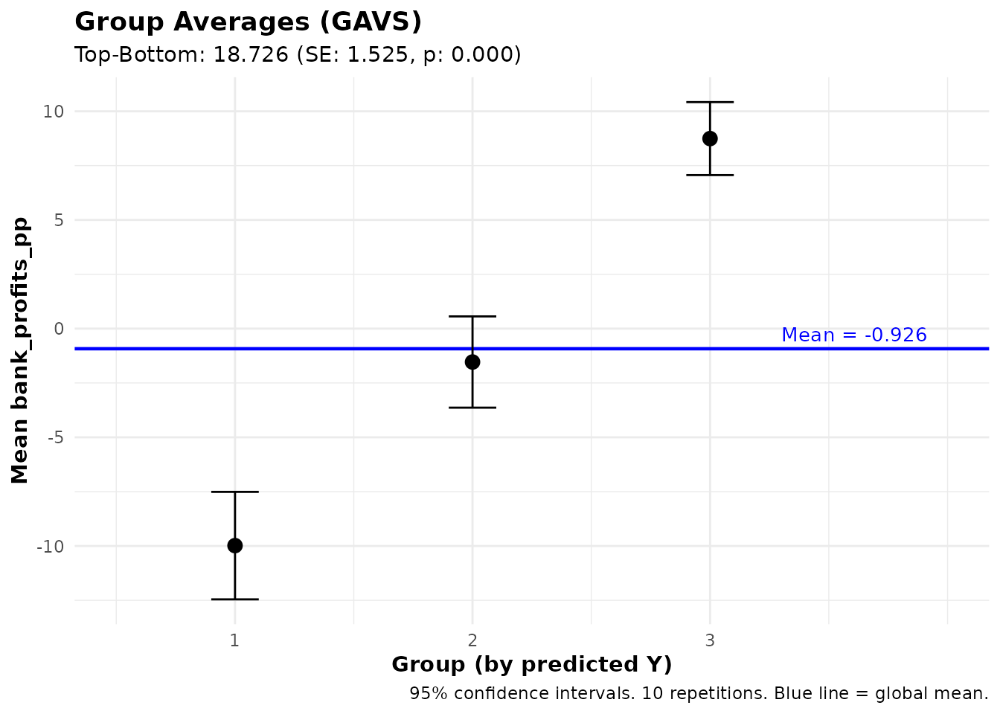
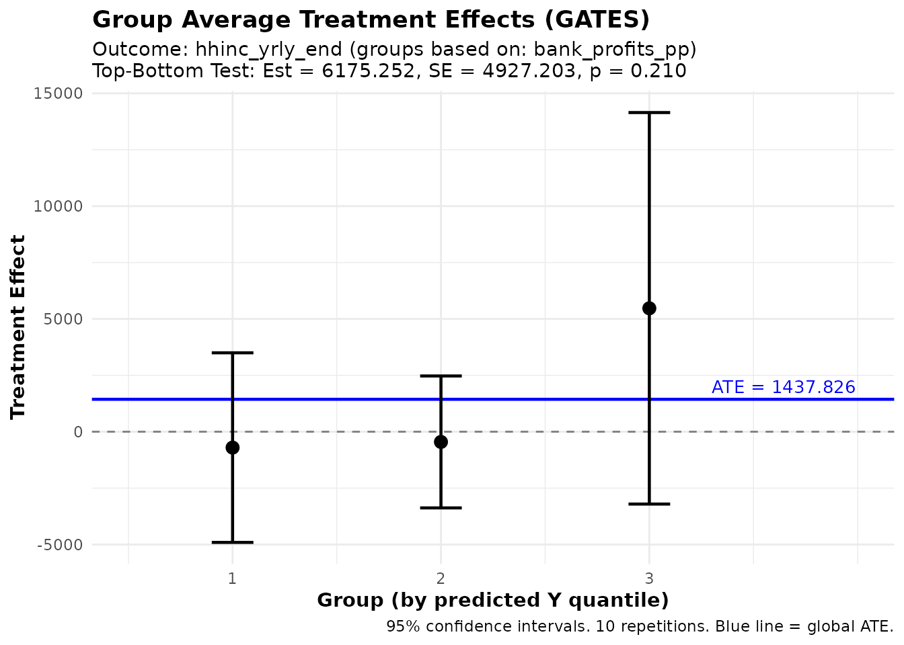
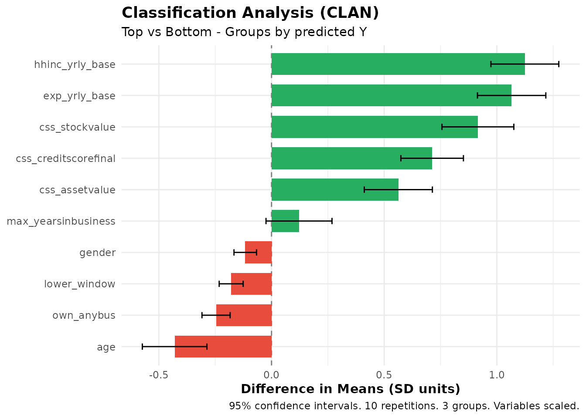
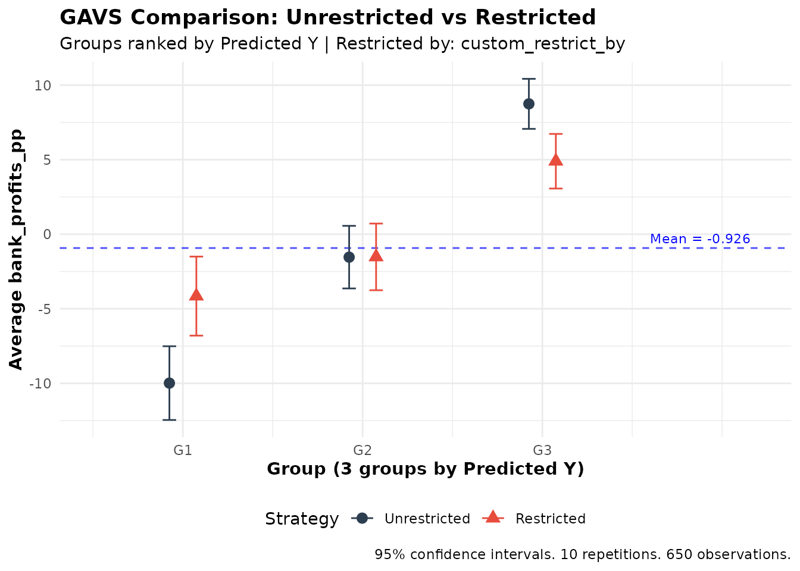
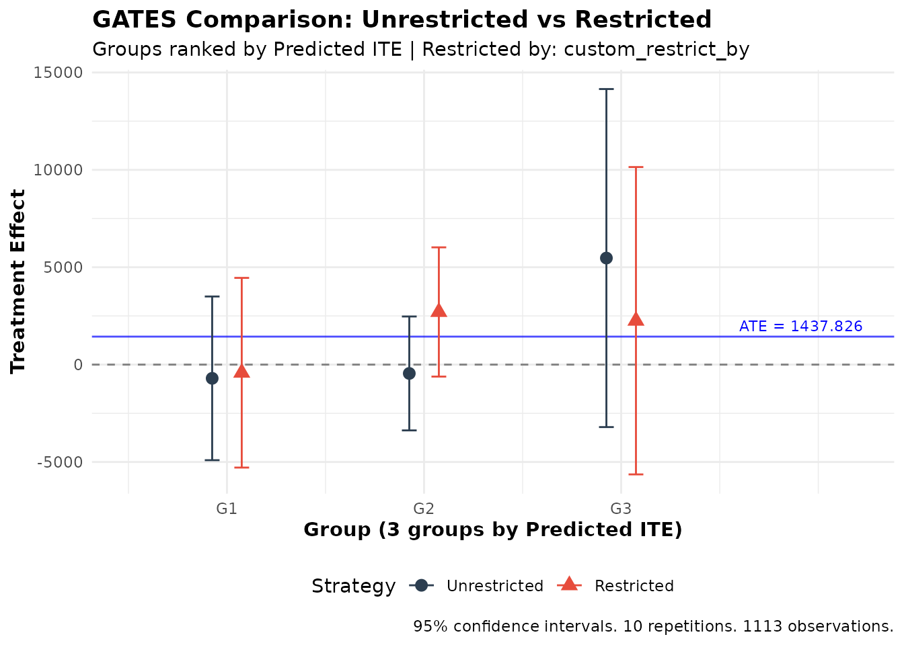

Introduction to ensembleHTE: Detecting Heterogeneity and Exploring Targeting Tradeoffs
Bruno Fava
2026-03-06
Source:vignettes/articles/microcredit-walkthrough.Rmd
microcredit-walkthrough.RmdIntroduction
The ensembleHTE package provides a practical approach to
heterogeneous treatment effect (HTE) analysis and prediction that (i)
uses the entire sample for both training and evaluation through repeated
cross-fitting, and (ii) combines predictions from multiple machine
learning algorithms into a single ensemble. It handles both
treatment-effect estimation (ensemble_hte) and standard
prediction tasks (ensemble_pred). A suite of downstream
analysis functions—BLP, GATES, CLAN and GAVS, originally proposed by Chernozhukov
et al. (2025) and adapted here following Fava (2025)—lets you test
for heterogeneity, characterize who is in each group, and compare
targeting strategies.
This walkthrough uses data from a randomized microfinance experiment in the Philippines, first studied by Karlan and Zinman (2011), in which individual-liability microloans were randomly offered to applicants. The analysis is inspired by Athey, Fava, Karlan, Osman and Zinman (2025), which studies whether targeting microloans for bank profitability comes at the cost of borrower welfare. We use the dataset as a running example to illustrate the package’s main features through three exercises:
-
Do microloans affect all borrowers equally? We use
ensemble_hte()to detect and characterize heterogeneous treatment effects on business expenses. -
Is there a tradeoff between bank profits and borrower
welfare? We use
ensemble_pred()to predict which borrowers are most profitable for the bank, then ask whether those same borrowers also benefit the most—or whether lending to profitable borrowers comes at borrowers’ expense. - What if the lender must maintain income balance? Targeting loans based on predicted profitability tends to steer credit toward higher-income applicants. We use the restricted analysis functions to ask whether requiring balance across household-income quintiles meaningfully reduces the lender’s ability to identify profitable borrowers.
Note on
M: Throughout this walkthrough we useM = 10repetitions for speed. For actual applications, I strongly recommend usingM >= 100to ensure stable inference. You can start with a smallMto verify your code, then scale up. If computation takes a long time,combine_ensembles()lets you split the work across sessions and merge the results afterward.
The data
The microcredit dataset ships with the package.
Treatment assignment depended on applicants’ credit scores: near a
scoring cutoff, applicants were randomly assigned to receive a loan
offer or not. A follow-up survey measured outcomes 11–22 months
later.
library(ensembleHTE)
data(microcredit)
dim(microcredit)
#> [1] 1113 51Key variables for our analysis:
| Variable | Description |
|---|---|
treat |
Treatment indicator (1 = loan offered) |
prop_score |
Known propensity score (varies by credit-score window) |
exp_yrly_end |
Yearly business expenses at endline (pesos) |
hhinc_yrly_end |
Yearly household income at endline (pesos) |
bank_profits_pp |
Bank profit per peso lent (only meaningful for borrowers) |
loan_size |
Loan amount (0 if no loan taken) |
css_creditscorefinal |
Credit score at application |
lower_window |
Indicator for the lower credit-score window |
own_anybus |
Owns any business (1 = yes) |
max_yearsinbusiness |
Maximum years in business |
css_assetvalue |
Business asset value at application |
Because treatment was randomized within credit-score windows, the propensity score varies across individuals and is provided in the data. We pass it explicitly to every function that needs it.
# Treatment shares
table(microcredit$treat)
#>
#> 0 1
#> 222 891
# Propensity score summary
summary(microcredit$prop_score)
#> Min. 1st Qu. Median Mean 3rd Qu. Max.
#> 0.5466 0.8435 0.8435 0.8005 0.8435 0.8435Part 1 — Do microloans affect all borrowers equally?
Setting up the specification
We want to test whether the effect of being offered a microloan on
business expenses varies across borrowers. We select a
small set of covariates that capture the applicant’s financial profile
and business background. There is nothing special about this particular
selection—it is chosen for convenience and ease of exposition. The
original paper uses a broader set of covariates (available as the
microcredit_covariates object in the package).
hte_covars <- c(
"css_creditscorefinal", # credit score
"lower_window", # lower credit-score window indicator
"own_anybus", # owns any business
"max_yearsinbusiness", # years of business experience
"css_assetvalue" # business asset value
)Fitting the ensemble
ensemble_hte() trains an ensemble of ML algorithms to
detect heterogeneous treatment effects. It uses repeated
cross-fitting—controlled by M (number of repetitions) and
K (number of folds)—to produce stable predictions and valid
standard errors.
The example below uses M = 10 repetitions and two
algorithms: OLS (lm) and generalized random forests
(grf). We discuss a preferred specification at the end of
this section.
set.seed(2026)
fit_hte <- ensemble_hte(
Y = "exp_yrly_end",
D = "treat",
X = hte_covars,
data = microcredit,
prop_score = "prop_score",
algorithms = c("lm", "grf"),
M = 10,
K = 4
)The print() method confirms the specification:
print(fit_hte)
#> Ensemble HTE Fit
#> ================
#>
#> Call:
#> ensemble_hte(data = microcredit, Y = "exp_yrly_end", X = hte_covars,
#> D = "treat", prop_score = "prop_score", M = 10, K = 4, algorithms = c("lm",
#> "grf"))
#>
#> Data:
#> Observations: 1113
#> Targeted outcome: exp_yrly_end
#> Treatment: treat
#> Covariates: 5
#>
#> Model specification:
#> Algorithms: lm, grf
#> Metalearner: R-learner
#> Task type: regression (continuous outcome)
#> R-learner method: grf
#>
#> Split-sample parameters:
#> Repetitions (M): 10
#> Folds (K): 4
#> Ensemble strategy: cross-validated BLP
#> Ensemble folds: 5
#> Covariate scaling: enabled
#> Hyperparameter tuning: disabledAnd summary() gives a first overview of the results:
summary(fit_hte)
#> Ensemble HTE Summary
#> ====================
#>
#> Call:
#> ensemble_hte(data = microcredit, Y = "exp_yrly_end", X = hte_covars,
#> D = "treat", prop_score = "prop_score", M = 10, K = 4, algorithms = c("lm",
#> "grf"))
#>
#> Outcome: exp_yrly_end
#> Treatment: treat
#> Observations: 1113
#> Repetitions: 10
#>
#> Best Linear Predictor (BLP):
#> beta1 (ATE): -2322.49 (SE: 4320.95, p: 0.591)
#> beta2 (HET): 0.71 (SE: 0.31, p: 0.021) *
#> -> Significant heterogeneity detected (p < 0.05)
#>
#> Group Average Treatment Effects (GATES) with 3 groups:
#> Group Estimate Std.Error Pr(>|t|)
#> --------------------------------------------
#> 1 -15540.33 9489.09 0.101
#> 2 -678.63 6456.99 0.916
#> 3 9226.00 5585.71 0.099 .
#>
#> Top - Bottom: 24766.33 (SE: 11108.65, p: 0.026) *
#>
#> ---
#> Signif. codes: 0 '***' 0.001 '**' 0.01 '*' 0.05 '.' 0.1 ' ' 1The summary reports two key diagnostics. beta1 (the
average treatment effect) is −2,322 pesos with a p-value of 0.59—no
evidence of an overall effect of loan offers on business expenses.
beta2 (the heterogeneity loading) is 0.71 with a p-value of
0.02—significant evidence that the ML model is well calibrated for
heterogeneity: predicted treatment effects are correlated with actual
treatment effects. The GATES top-minus-bottom gap is about 24,800 pesos
(p = 0.03), reinforcing this finding.
Let’s look at each of these in more detail.
Is there heterogeneity? BLP
The Best Linear Predictor (BLP) asks two questions:
-
Is there an average treatment effect?
beta1tests whether the loan offer shifts business expenses on average. -
Does the ML model capture real heterogeneity?
beta2tests whether the predicted treatment effects are correlated with actual treatment effects—a significant result means people are genuinely affected differently.
blp_res <- blp(fit_hte)
print(blp_res)
#> BLP Results (Best Linear Predictor of CATE)
#> ============================================
#>
#> Fit type: HTE (ensemble_hte)
#> Outcome analyzed: exp_yrly_end
#> Repetitions: 10
#>
#> Coefficients:
#> beta1 (ATE): Average Treatment Effect
#> beta2 (HET): Heterogeneity loading (significant = ML captures heterogeneity)
#>
#> Term Estimate Std.Error t value Pr(>|t|)
#> ----------------------------------------------------
#> beta1 -2322.49 4320.95 -0.54 0.591
#> beta2 0.71 0.31 2.30 0.021 *
#>
#> ---
#> Signif. codes: 0 '***' 0.001 '**' 0.01 '*' 0.05 '.' 0.1 ' ' 1
plot(blp_res)
BLP: average treatment effect and heterogeneity loading.
Here, beta1 is not significant (p = 0.59): there is no
detectable average effect of loan offers on business expenses.
beta2 is significant (p = 0.02): the ML predictions are
correlated with actual heterogeneity, meaning that the effect of the
loan offer genuinely differs across borrowers.
How do effects vary? GATES
GATES (Group Average Treatment Effects) sorts individuals into groups based on their predicted treatment effect—from lowest to highest—and estimates the average effect in each group. If the treatment truly affects people differently, these group-level effects should vary systematically.
gates_res <- gates(fit_hte, n_groups = 3)
print(gates_res)
#> GATES Results
#> =============
#>
#> Fit type: HTE (ensemble_hte)
#> Outcome analyzed: exp_yrly_end
#> Number of groups: 3
#> Repetitions: 10
#>
#> Group Average Treatment Effects:
#>
#> Group Estimate Std.Error t value Pr(>|t|)
#> ----------------------------------------------------
#> 1 -15540.33 9489.09 -1.64 0.101
#> 2 -678.63 6456.99 -0.11 0.916
#> 3 9226.00 5585.71 1.65 0.099 .
#>
#> Heterogeneity Tests:
#> ----------------------------------------------------
#> Test Estimate Std.Error t value Pr(>|t|)
#> ----------------------------------------------------
#> Top-Bottom 24766.33 11108.65 2.23 0.026 *
#> Top-All 11570.61 5411.79 2.14 0.033 *
#>
#> ---
#> Signif. codes: 0 '***' 0.001 '**' 0.01 '*' 0.05 '.' 0.1 ' ' 1
plot(gates_res)
GATES: average treatment effect by predicted-effect tercile, with 95% confidence intervals.
The bottom tercile—the third of borrowers predicted to have the lowest treatment effects—shows an average treatment effect of −15,540 pesos, meaning the loan offer is estimated to reduce their business expenses. The middle tercile is near zero (−679), and the top tercile shows a positive effect of +9,226 pesos. None of these is individually significant at the 5% level, which is not surprising given the sample size. But the pattern is strongly monotonic, and the top-minus-bottom difference of 24,766 pesos—saying the average treatment effect is 24,800 pesos higher in the top group than in the bottom group—is statistically significant (p = 0.03). This is consistent with the BLP result: the treatment genuinely affects borrowers differently.
Who is in each group? CLAN
Now that we know treatment effects vary, the natural question is who is in each group. CLAN (Classification Analysis) answers this by computing the average of each covariate within the GATES groups and testing whether those averages differ between the top and bottom groups.
clan_res <- clan(fit_hte, n_groups = 3)
print(clan_res)
#> CLAN Results (Classification Analysis)
#> =======================================
#>
#> Outcome: exp_yrly_end (treatment effects) | Groups: 3 | Reps: 10
#>
#> Group Means (by predicted ITE):
#> Top Bottom Else All
#> ----------------------------------------------------------------
#> css_creditscorefinal 50.55 52.06 51.70 51.32
#> (0.27) (0.29) (0.20) (0.16)
#> lower_window 0.15 0.15 0.14 0.14
#> (0.02) (0.02) (0.01) (0.01)
#> own_anybus 0.62 0.84 0.79 0.73
#> (0.03) (0.02) (0.01) (0.01)
#> max_yearsinbusiness 5.25 8.55 7.37 6.66
#> (0.22) (0.33) (0.22) (0.17)
#> css_assetvalue 93545.89 53070.43 52325.19 66060.43
#> (9651.74) (7900.08) (5481.81) (4940.35)
#>
#> Differences from Top Group:
#> Top-Bot Top-Else Top-All
#> -----------------------------------------------------------
#> css_creditscorefinal -1.51*** -1.16*** -0.77***
#> (0.40) (0.34) (0.22)
#> lower_window -0.00 0.01 0.00
#> (0.03) (0.02) (0.01)
#> own_anybus -0.22*** -0.17*** -0.12***
#> (0.03) (0.03) (0.02)
#> max_yearsinbusiness -3.30*** -2.12*** -1.41***
#> (0.40) (0.31) (0.21)
#> css_assetvalue 40475.46** 41220.70*** 27485.46***
#> (12680.33) (11151.29) (7460.67)
#>
#> ---
#> Signif. codes: 0 '***' 0.001 '**' 0.01 '*' 0.05 '.' 0.1 ' ' 1
plot(clan_res)
CLAN: covariate means by GATES group (scaled for comparability).
Compared to the bottom group (those whose business expenses are predicted to decrease most), borrowers in the top group:
- Have significantly higher business asset values (93,546 vs. 53,070 pesos, p < 0.01).
- Have significantly fewer years in business (5.3 vs. 8.6 years, p < 0.001).
- Are significantly less likely to already own a business (62% vs. 84%, p < 0.001).
- Have slightly lower credit scores (50.5 vs. 52.1, p < 0.001).
Borrowers who increase their expenditures most in response to the loan offer tend to be asset-rich but relatively new to business ownership—perhaps people with resources who are using the microloan to start or expand a business. By contrast, those in the bottom group are longer-established business owners with higher credit scores.
Preferred specification
The example above uses M = 10 and two algorithms for
speed. For a more thorough analysis, I recommend using
M >= 100 repetitions (even larger values are better if
computationally feasible— Athey et
al. (2025) uses M = 500), and a richer set of
algorithms: generalized random forests (grf), elastic net
(glmnet), neural networks (nnet), and gradient
boosting (xgboost). More repetitions improve the stability
of the inference, and more algorithms give the ensemble a wider range of
modeling strategies to draw from.
fit_hte <- ensemble_hte(
Y = "exp_yrly_end",
D = "treat",
X = hte_covars,
data = microcredit,
prop_score = "prop_score",
algorithms = c("grf", "glmnet", "nnet", "xgboost"),
M = 200,
K = 4
)If computation takes a long time, combine_ensembles()
lets you split the work across sessions and merge the results
afterward.
Part 2 — Is there a tradeoff between bank profits and borrower welfare?
The question
Beyond impacts on borrowers, lenders and policymakers care about the financial sustainability of microlending. Can we identify which borrowers are most profitable for the bank? And if the lender targets the most profitable borrowers, does that come at borrowers’ expense—or can both goals coexist?
This is a central question in Athey, Fava,
Karlan, Osman and Zinman (2025). Notice that this is not a
treatment-effect question: we are simply predicting an outcome (bank
profits), then examining what that prediction implies for other
outcomes. The ensemble_pred() function handles this type of
prediction task.
Predicting an outcome that is only partially observed
Bank profit per peso lent (bank_profits_pp) is only
observed for individuals who were offered a loan and actually
took it—the bank only earns revenue on disbursed loans. For everyone
else, bank profits are undefined.
ensemble_pred() handles this through the
train_idx argument: we tell the function to
train on the subset where profits are observed, while
still generating predictions for everyone. This matters
because we want to rank all applicants by predicted
profitability, not just those who happened to get a loan.
# Who has observable bank profits?
has_loan <- microcredit$treat == 1 & microcredit$loan_size > 0
sum(has_loan)
#> [1] 650There are 650 borrowers with observed bank profits. The model will train on these but predict profitability for all 1,113 applicants.
Choosing covariates
We pick covariates plausibly related to bank profitability. As before, this is a small selection for illustration; the original paper uses a richer specification.
profit_covars <- c(
"css_creditscorefinal", # credit score
"lower_window", # credit-score window
"own_anybus", # business ownership
"max_yearsinbusiness", # business experience
"css_assetvalue", # business asset value
"css_stockvalue", # stock value
"age", # age
"gender", # gender
"hhinc_yrly_base", # baseline household income
"exp_yrly_base" # baseline business expenses
)Fitting the ensemble
set.seed(2026)
fit_pred <- ensemble_pred(
Y = "bank_profits_pp",
X = profit_covars,
data = microcredit,
train_idx = has_loan,
algorithms = c("lm", "grf"),
M = 10,
K = 4
)As with ensemble_hte(), using M >= 100
repetitions and a richer set of algorithms (grf,
glmnet, nnet, xgboost) is
recommended for real applications.
print(fit_pred)
#> Ensemble Prediction Fit
#> =======================
#>
#> Call:
#> ensemble_pred(data = microcredit, Y = "bank_profits_pp", X = profit_covars,
#> train_idx = has_loan, M = 10, K = 4, algorithms = c("lm",
#> "grf"))
#>
#> Data:
#> Observations: 1113
#> Training obs: 650 (subset)
#> Outcome: bank_profits_pp
#> Covariates: 10
#>
#> Model specification:
#> Algorithms: lm, grf
#> Task type: regression (continuous outcome)
#>
#> Split-sample parameters:
#> Repetitions (M): 10
#> Folds (K): 4
#> Ensemble strategy: cross-validated OLS
#> Ensemble folds: 5
#> Covariate scaling: enabled
#> Hyperparameter tuning: disabled
summary(fit_pred)
#> Ensemble Prediction Summary
#> ===========================
#>
#> Call:
#> ensemble_pred(data = microcredit, Y = "bank_profits_pp", X = profit_covars,
#> train_idx = has_loan, M = 10, K = 4, algorithms = c("lm",
#> "grf"))
#>
#> Outcome: bank_profits_pp
#> Observations: 1113
#> Training obs: 650
#> Repetitions: 10
#>
#> Prediction Accuracy (averaged across 10 repetitions):
#> R-squared: 0.22
#> RMSE: 15.12
#> MAE: 10.98
#> Correlation: 0.47
#>
#> Best Linear Predictor (BLP):
#> intercept: -0.01 (SE: 0.59, p: 0.988)
#> slope: 0.99 (SE: 0.07, p: 0.000) ***
#> -> Intercept close to 0 and slope close to 1 indicate good calibration
#>
#> Group Averages (GAVS) with 3 groups:
#> Group Estimate Std.Error Pr(>|t|)
#> --------------------------------------------
#> 1 -9.98 1.26 0.000 ***
#> 2 -1.54 1.07 0.151
#> 3 8.74 0.86 0.000 ***
#>
#> Top - Bottom: 18.73 (SE: 1.53, p: 0.000) ***
#>
#> ---
#> Signif. codes: 0 '***' 0.001 '**' 0.01 '*' 0.05 '.' 0.1 ' ' 1The summary tells us the model has meaningful predictive power: the R-squared on the training observations is 0.22 and the correlation between predictions and outcomes is 0.47. The built-in BLP diagnostic shows an intercept close to zero (−0.01, p = 0.99) and a slope close to one (0.99, p < 0.001), meaning the predictions are well calibrated.
The GAVS section at the bottom already shows the model successfully separates borrowers: the bottom tercile averages −10.0 pesos of profit per peso lent, while the top tercile averages +8.7. The top-minus-bottom gap of 18.7 pesos is highly significant (p < 0.001).
Let’s look at each of these in more detail.
Does the model predict well? BLP for predictions
Let’s examine the calibration diagnostic more closely.
blp_pred() is the prediction analogue of
blp(). It regresses the observed outcome on the ML
predictions and tests two things:
- Is the intercept close to zero? If so, the predictions are not systematically biased.
- Is the slope close to one? If so, the predictions are well calibrated: a one-unit increase in predicted profit corresponds to a one-unit increase in actual profit.
blp_pred_res <- blp_pred(fit_pred)
print(blp_pred_res)
#> BLP Results (Best Linear Predictor - Prediction)
#> =================================================
#>
#> Fit type: Prediction (ensemble_pred)
#> Outcome analyzed: bank_profits_pp
#> Observations used: 650
#> Repetitions: 10
#>
#> Coefficients:
#> intercept: Regression intercept (0 = well-calibrated)
#> beta: Prediction loading (1 = well-calibrated)
#>
#> Term Estimate Std.Error t value Pr(>|t|)
#> ----------------------------------------------------
#> intercept -0.01 0.59 -0.02 0.988
#> beta 0.99 0.07 14.89 0.000 ***
#>
#> ---
#> Signif. codes: 0 '***' 0.001 '**' 0.01 '*' 0.05 '.' 0.1 ' ' 1The intercept is −0.01 (not significantly different from zero) and the slope is 0.99 (highly significant and close to one). This confirms the model is well calibrated.
Group averages of bank profits: GAVS
GAVS (Group Averages) sorts observations into groups by their predicted bank profit and computes the average observed profit in each group. If the model is useful, higher-prediction groups should have higher observed profits.
Because bank_profits_pp is only observed for borrowers
who took a loan, gavs() automatically restricts the
analysis to those observations:
gavs_res <- gavs(fit_pred, n_groups = 3)
print(gavs_res)
#> GAVS Results (Group Averages)
#> =============================
#>
#> Outcome analyzed: bank_profits_pp
#> Number of groups: 3
#> Repetitions: 10
#>
#> Data usage:
#> ML trained on: 650 of 1113 obs
#> Analysis evaluated on: 650 of 1113 obs
#> Groups (3) formed on: all observations (1113 obs)
#>
#> Group Average Outcomes (groups by predicted Y):
#>
#> Group Estimate Std.Error t value Pr(>|t|)
#> ----------------------------------------------------
#> 1 -9.98 1.26 -7.91 0.000 ***
#> 2 -1.54 1.07 -1.43 0.151
#> 3 8.74 0.86 10.21 0.000 ***
#>
#> Heterogeneity Tests:
#> ----------------------------------------------------
#> Test Estimate Std.Error t value Pr(>|t|)
#> ----------------------------------------------------
#> Top-Bottom 18.73 1.53 12.28 0.000 ***
#> Top-All 8.75 0.74 11.78 0.000 ***
#>
#> ---
#> Signif. codes: 0 '***' 0.001 '**' 0.01 '*' 0.05 '.' 0.1 ' ' 1
plot(gavs_res)
GAVS: average observed bank profits by predicted-profit tercile.
The results confirm the model sharply separates profitable from unprofitable borrowers. The bottom tercile (those predicted to be least profitable) has an average observed profit of −10.0 pesos per peso lent—the bank loses money on these borrowers. The middle tercile is roughly break-even (−1.5, not significant). The top tercile earns +8.7 pesos per peso lent. The top-minus-bottom gap of 18.7 pesos is highly significant (p < 0.001).
Do profitable borrowers also benefit from the loan? GATES
This is the key question. We use gates() with a twist:
we keep the groups defined by predicted bank profits, but we
switch the outcome to household income. In other words, among
borrowers the bank would rank as most profitable, what happens to their
income when they are offered a loan?
Because household income is observed for everyone (treated and
control), no subsetting is needed here. We pass the
outcome, treatment, and
prop_score arguments to tell gates() to
estimate treatment effects on a different outcome than the one the model
was trained on:
gates_hhinc <- gates(
fit_pred,
outcome = "hhinc_yrly_end",
treatment = "treat",
prop_score = "prop_score",
n_groups = 3
)
print(gates_hhinc)
#> GATES Results
#> =============
#>
#> Fit type: Prediction (ensemble_pred)
#> Outcome analyzed: hhinc_yrly_end
#> (Groups based on: bank_profits_pp predicted Y)
#> Number of groups: 3
#> Repetitions: 10
#>
#> Data usage:
#> ML trained on: 650 of 1113 obs
#> Analysis evaluated on: 1113 of 1113 obs
#> Groups (3) formed on: all observations (1113 obs)
#>
#> Group Average Treatment Effects:
#>
#> Group Estimate Std.Error t value Pr(>|t|)
#> ----------------------------------------------------
#> 1 -704.41 2144.20 -0.33 0.743
#> 2 -452.95 1492.09 -0.30 0.761
#> 3 5470.84 4427.63 1.24 0.217
#>
#> Heterogeneity Tests:
#> ----------------------------------------------------
#> Test Estimate Std.Error t value Pr(>|t|)
#> ----------------------------------------------------
#> Top-Bottom 6175.25 4927.20 1.25 0.210
#> Top-All 4033.24 3078.73 1.31 0.190
#>
#> ---
#> Signif. codes: 0 '***' 0.001 '**' 0.01 '*' 0.05 '.' 0.1 ' ' 1
plot(gates_hhinc)
GATES: treatment effect on household income, by predicted bank-profit tercile.
How to read this:
- If the top group (most profitable for the bank) also shows the largest positive treatment effect on income, profitability and welfare are complements—the lender can do well and do good at the same time.
- If the top group shows a smaller or negative effect, there is a tradeoff—profitable borrowers are not the ones who benefit most.
- If there is no significant difference across groups, profitability and welfare may be unrelated—but this could also reflect low statistical power rather than a true absence of a relationship.
The point estimates suggest a possible complementarity: the top
profit group shows a treatment effect on household income of +5,471
pesos, while the bottom and middle groups are near zero (−704 and −453,
respectively). However, none of these estimates is individually
significant, and the top-minus-bottom gap of 6,175 pesos has a p-value
of 0.21. With this sample size and M = 10, we do not have
enough power to draw a firm conclusion about whether profitability and
welfare are complements or substitutes. The lack of a significant
relationship could genuinely mean no tradeoff exists, but it could also
simply reflect insufficient statistical power—too much noise in the
treatment-effect estimates given the available sample.
Who is in each profit group? CLAN
clan_pred <- clan(fit_pred, n_groups = 3, variables = profit_covars)
print(clan_pred)
#> CLAN Results (Classification Analysis)
#> =======================================
#>
#> Outcome: bank_profits_pp (prediction) | Groups: 3 | Reps: 10
#>
#> Data usage:
#> ML trained on: 650 of 1113 obs
#> Analysis evaluated on: 1113 of 1113 obs
#> Groups (3) formed on: all observations (1113 obs)
#>
#> Group Means (by predicted Y):
#> Top Bottom Else All
#> --------------------------------------------------------------------
#> css_creditscorefinal 52.50 48.67 50.73 51.32
#> (0.25) (0.29) (0.20) (0.16)
#> lower_window 0.09 0.27 0.17 0.14
#> (0.01) (0.02) (0.01) (0.01)
#> own_anybus 0.59 0.84 0.80 0.73
#> (0.03) (0.02) (0.01) (0.01)
#> max_yearsinbusiness 7.14 6.47 6.43 6.66
#> (0.32) (0.27) (0.19) (0.17)
#> css_assetvalue 112626.10 19870.08 42777.59 66060.43
#> (12409.58) (2740.87) (3780.83) (4940.35)
#> css_stockvalue 107578.36 12567.03 19613.41 48935.06
#> (8427.65) (400.36) (733.14) (3109.06)
#> age 40.29 44.07 42.94 42.06
#> (0.46) (0.45) (0.32) (0.26)
#> gender 0.80 0.91 0.88 0.85
#> (0.02) (0.01) (0.01) (0.01)
#> hhinc_yrly_base 30403.82 9972.10 11825.77 18018.45
#> (1380.71) (209.76) (191.20) (544.67)
#> exp_yrly_base 128420.07 40938.98 48966.47 75451.00
#> (6255.31) (1120.14) (1009.38) (2460.53)
#>
#> Differences from Top Group:
#> Top-Bot Top-Else Top-All
#> -----------------------------------------------------------
#> css_creditscorefinal 3.83*** 1.77*** 1.18***
#> (0.38) (0.32) (0.22)
#> lower_window -0.18*** -0.09*** -0.06***
#> (0.03) (0.02) (0.01)
#> own_anybus -0.25*** -0.21*** -0.14***
#> (0.03) (0.03) (0.02)
#> max_yearsinbusiness 0.67 0.71. 0.48.
#> (0.41) (0.37) (0.25)
#> css_assetvalue 92756.02*** 69848.52*** 46565.68***
#> (12716.82) (12972.84) (8702.86)
#> css_stockvalue 95011.33*** 87964.95*** 58643.30***
#> (8437.16) (8459.94) (5774.20)
#> age -3.78*** -2.65*** -1.77***
#> (0.64) (0.56) (0.37)
#> gender -0.12*** -0.08*** -0.05***
#> (0.03) (0.02) (0.02)
#> hhinc_yrly_base 20431.72*** 18578.05*** 12385.37***
#> (1396.55) (1393.89) (965.46)
#> exp_yrly_base 87481.09*** 79453.60*** 52969.07***
#> (6354.81) (6336.22) (4370.03)
#>
#> ---
#> Signif. codes: 0 '***' 0.001 '**' 0.01 '*' 0.05 '.' 0.1 ' ' 1
plot(clan_pred)
CLAN: covariate means by predicted-profit group (scaled for comparability).
The CLAN results reveal a crucial tradeoff between lender profits and distributional objectives—a central finding of Athey et al. (2025). Compared to the bottom tercile, the top profit group:
- Has higher credit scores (52.5 vs. 48.7, p < 0.001) and is less likely to be in the lower credit-score window (9% vs. 27%).
- Has much higher business assets (112,626 vs. 19,870 pesos) and stock values (107,578 vs. 12,567 pesos)—both p < 0.001.
- Has higher baseline income (30,404 vs. 9,972 pesos) and business expenses (128,420 vs. 40,939 pesos)—both p < 0.001.
- Is younger (40.3 vs. 44.1 years, p < 0.001) and more likely to be male (80% vs. 91% female, p < 0.001).
- Is less likely to own a business at baseline (59% vs. 84%, p < 0.001).
Even though the GATES analysis above found no evidence of a tradeoff between profits and treatment effects on income, the CLAN results reveal an important distributional tradeoff: selecting the most profitable borrowers effectively means selecting wealthier, higher-income, better-scored applicants with a higher proportion of men. This motivates Part 3: if the bank targets profitability, what happens when a regulator requires that loan allocation remain balanced across income groups?
Part 3 — What if the lender must maintain income balance?
The problem
The CLAN results from Part 2 showed that profitable borrowers tend to have substantially higher baseline incomes (30,404 vs. 9,972 pesos). If a lender targets loans based on predicted profitability, it will systematically direct credit toward higher-income applicants—the very people who are already better off. A regulator or the lender itself might respond with a constraint: loan allocation must be balanced across household-income groups.
But does the equity constraint meaningfully reduce the lender’s ability to identify profitable borrowers—or can both goals coexist?
How restricted targeting works
The gavs_restricted() and
gates_restricted() functions compare two targeting
strategies:
- Unrestricted: rank all applicants by predicted profitability and form groups from the overall distribution.
- Restricted: rank applicants within each income quintile, then form groups within each stratum. This ensures every income group contributes proportionally to the top, middle, and bottom profit groups.
The difference between the two measures the efficiency cost of the constraint.
Creating income quintiles
We split borrowers into five equally sized groups (quintiles) based
on their baseline household income. The cut() function
assigns each borrower to a quintile by computing the 20th, 40th, 60th,
and 80th percentiles of hhinc_yrly_base and labeling each
observation Q1 (lowest income) through Q5 (highest income):
Does the constraint hurt profitability? GAVS restricted
We compare average observed bank profits across terciles under both strategies:
gavs_r <- gavs_restricted(
fit_pred,
restrict_by = hhinc_quintile,
n_groups = 3,
subset = "train"
)
print(gavs_r)
#>
#> GAVS Comparison: Unrestricted vs Restricted Ranking
#> ====================================================
#>
#> Strategy comparison:
#> - Unrestricted: Rank predictions across full sample within folds
#> - Restricted: Rank predictions within groups ('custom_restrict_by')
#> - Restrict_by levels: Q1, Q2, Q3, Q4, Q5
#>
#> Groups (3) defined by: predicted Y
#> Outcome: bank_profits_pp
#> Observations: 650
#> Repetitions: 10
#>
#> Unrestricted GAVS Estimates:
#> ----------------------------------------
#> Group Estimate SE t p-value
#> 1 -9.98 1.26 -7.91 0.000 ***
#> 2 -1.54 1.07 -1.43 0.151
#> 3 8.74 0.86 10.21 0.000 ***
#>
#> Top-Bottom: 18.73 (SE: 1.53, p = 0.000) ***
#> All: -0.01 (SE: 0.60, p = 0.989)
#> Top-All: 8.75 (SE: 0.74, p = 0.000) ***
#>
#> Restricted GAVS Estimates:
#> ----------------------------------------
#> Group Estimate SE t p-value
#> 1 -4.15 1.35 -3.07 0.002 **
#> 2 -1.52 1.14 -1.33 0.183
#> 3 4.90 0.93 5.24 0.000 ***
#>
#> Top-Bottom: 9.04 (SE: 1.64, p = 0.000) ***
#> All: -0.01 (SE: 0.66, p = 0.990)
#> Top-All: 4.90 (SE: 0.82, p = 0.000) ***
#>
#> Difference (Unrestricted - Restricted):
#> ----------------------------------------
#> Group Estimate SE t p-value
#> 1 -5.83 1.28 -4.58 0.000 ***
#> 2 -0.02 1.28 -0.01 0.990
#> 3 3.85 0.89 4.33 0.000 ***
#>
#> Top-Bottom Diff: 9.68 (SE: 1.66, p = 0.000) ***
#> All Diff: -0.00 (SE: 0.26, p = 1.000)
#> Top-All Diff: 3.85 (SE: 0.89, p = 0.000) ***
#>
#> ---
#> Signif. codes: 0 '***' 0.001 '**' 0.01 '*' 0.05 '.' 0.1 ' ' 1
plot(gavs_r)
Unrestricted vs. restricted GAVS on bank profits.
The results show that the equity constraint comes at a real cost to profitability targeting. Under unrestricted targeting, the top-minus-bottom gap in observed bank profits is 18.7 pesos per peso lent. Under the income-balanced constraint, this gap shrinks to 9.0—roughly half. The difference of 9.7 pesos is highly significant (p < 0.001).
Notice that the restricted model can still identify profitable borrowers: the top tercile under the equity constraint averages +4.9 pesos per peso lent, and the bottom tercile −4.1. The constraint does not eliminate the model’s predictive power—it just reduces it.
This makes intuitive sense: if the model uses income-related covariates to predict profitability, requiring balance across income quintiles removes a key source of predictive variation. The lender can still identify profitable borrowers within each income group, but the overall separation is substantially reduced.
Does the constraint change welfare impacts? GATES restricted
The same comparison applies to treatment effects on household income. Do the welfare consequences of profit-based targeting change under the equity constraint?
gates_r <- gates_restricted(
fit_pred,
restrict_by = hhinc_quintile,
outcome = "hhinc_yrly_end",
treatment = "treat",
prop_score = "prop_score",
n_groups = 3
)
print(gates_r)
#>
#> GATES Comparison: Unrestricted vs Restricted Ranking
#> =====================================================
#>
#> Fit type: Prediction (ensemble_pred)
#>
#> Strategy comparison:
#> - Unrestricted: Rank predictions across full sample
#> - Restricted: Rank predictions within groups ('custom_restrict_by')
#> - Restrict_by levels: Q1, Q2, Q3, Q4, Q5
#>
#> Groups (3) defined by: predicted Y
#> Outcome: hhinc_yrly_end
#> Note: outcome differs from targeted outcome (bank_profits_pp)
#> Observations: 1113
#> Repetitions: 10
#>
#> Unrestricted GATES Estimates:
#> ----------------------------------------
#> Group Estimate SE t p-value
#> 1 -704.41 2144.20 -0.33 0.743
#> 2 -452.95 1492.09 -0.30 0.761
#> 3 5470.84 4427.63 1.24 0.217
#>
#> Top-Bottom: 6175.25 (SE: 4927.20, p = 0.210)
#> All: 1437.60 (SE: 1713.80, p = 0.402)
#> Top-All: 4033.24 (SE: 3078.73, p = 0.190)
#>
#> Restricted GATES Estimates:
#> ----------------------------------------
#> Group Estimate SE t p-value
#> 1 -416.39 2484.51 -0.17 0.867
#> 2 2703.39 1692.82 1.60 0.110
#> 3 2253.84 4025.73 0.56 0.576
#>
#> Top-Bottom: 2670.23 (SE: 4728.13, p = 0.572)
#> All: 1494.61 (SE: 1683.29, p = 0.375)
#> Top-All: 759.23 (SE: 2862.26, p = 0.791)
#>
#> Difference (Unrestricted - Restricted):
#> ----------------------------------------
#> Group Estimate SE t p-value
#> 1 -288.03 1932.52 -0.15 0.882
#> 2 -3156.34 1979.88 -1.59 0.111
#> 3 3217.00 2053.59 1.57 0.117
#>
#> Top-Bottom Diff: 3505.02 (SE: 3483.03, p = 0.314)
#> All Diff: -57.01 (SE: 212.79, p = 0.789)
#> Top-All Diff: 3274.01 (SE: 2093.84, p = 0.118)
#>
#> ---
#> Signif. codes: 0 '***' 0.001 '**' 0.01 '*' 0.05 '.' 0.1 ' ' 1
plot(gates_r)
Unrestricted vs. restricted GATES on household income.
Under unrestricted targeting, the top profit group shows a treatment effect on household income of +5,471 pesos (the complementarity pattern from Part 2). Under restricted targeting, this drops to +2,254, and the top-minus-bottom gap shrinks from 6,175 to 2,670 pesos. However, none of the differences between unrestricted and restricted targeting are statistically significant (p = 0.31 for the top-minus-bottom gap). This is largely because the treatment effect estimates themselves are noisy—as we saw in Part 2, individual group effects are not significant even under unrestricted targeting.
In practical terms: the income-balance constraint clearly reduces the lender’s ability to sort borrowers by profitability, but we cannot say with confidence whether it changes the welfare implications of that sorting.
Note:
restrict_byaccepts either a character scalar naming a column in the data (e.g.,restrict_by = "hhinc_quintile") or a vector of the same length as the data. For continuous variables, usecut()to create bins first, as we did above with income quintiles.
Summary
| Exercise | Question | Key functions |
|---|---|---|
| Part 1 | Do microloans affect all borrowers equally? |
ensemble_hte() → blp(),
gates(), clan()
|
| Part 2 | Is there a tradeoff between bank profits and borrower welfare? |
ensemble_pred() → blp_pred(),
gavs(), gates(), clan()
|
| Part 3 | What happens if the lender must maintain income balance? |
gavs_restricted(), gates_restricted()
|
A few things worth remembering:
-
train_idxis essential when your outcome is only observed for a subset of individuals. The models train on that subset but predict for everyone. -
gates()can use a different outcome than the one the model was trained on. This is how we asked: “among the groups formed by predicted bank profits, what are the treatment effects on household income?” Just pass theoutcome,treatment, andprop_scorearguments. -
ensemble_hte()objects can also usegavs()with a different outcome. For example, after estimating heterogeneous treatment effects on business expenses, you could usegavs(fit_hte, outcome = "bank_profits_pp")to ask whether borrowers predicted to increase their expenditures more also generate higher profits for the bank—another way to explore potential tradeoffs. -
restrict_bylets you compare free targeting against equity-constrained targeting. Pass any categorical variable to define the strata. -
Use
M >= 100for publication-quality inference. TheM = 10used here is for illustration only. Larger values are even better if computationally feasible—Athey et al. (2025) usesM = 500.combine_ensembles()can merge results across sessions if computation time is a concern.
References
Athey, S., Fava, B., Karlan, D., Osman, A. and Zinman, J. (2025). Profits and Social Impacts: Complements vs. Tradeoffs for Lenders in Three Countries. Working paper. Link
Chernozhukov, V., Demirer, M., Duflo, E. and Fernandez-Val, I. (2025). Fisher–Schultz Lecture: Generic Machine Learning Inference on Heterogeneous Treatment Effects in Randomized Experiments, With an Application to Immunization in India. Econometrica, 93(4), 1121–1164. doi:10.3982/ECTA19303
Fava, B. (2025). Training and Testing with Multiple Splits: A Central Limit Theorem for Split-Sample Estimators. arXiv preprint arXiv:2511.04957. Link
Karlan, D. and Zinman, J. (2011). Microcredit in Theory and Practice: Using Randomized Credit Scoring for Impact Evaluation. Science, 332(6035), 1278–1284. doi:10.1126/science.1200138